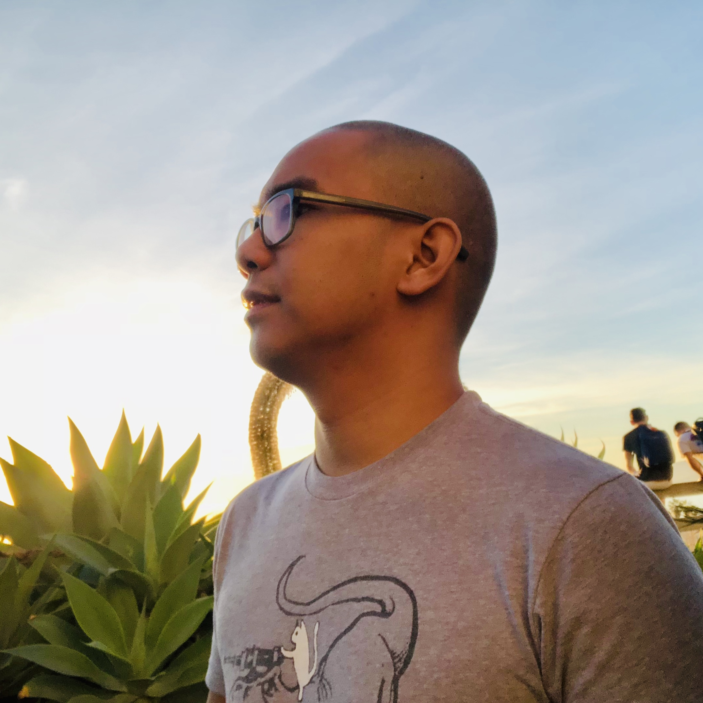

About Me

I'm John Michael Laceda. I'm an aspiring Full Stack Developer with an extensive tech background in supporting backend services. I hail from a land across the Great Puget Sound in Bremerton Washington. I currently sail into Seattle for work everyday! My beautiful fiancée and I take care of a cute little Rat-Cha (Chihuahua / Rat Terrier mix) named Bella and an old spinster Tabby named Pudgy.
I grew up in the Philippines and survived a volcano eruption before my family and I emigrated to The United States of America.
In high school I took a Computer Aided Drafting class as an elective. This set me on a course to wanting to learn all about computers and started breaking and fixing (if I was lucky!) our family computer. I started to get into Linux and eventually got a job supporting back end services run on Linux servers.
My hobbies are fleeting obsessions. As a youth I was very into music so I joined a couple of garage bands that fizzled out. Around the same time I got into competitive video games with pipe dreams of being a Brood War bonjwa but I was never really good. Recently, I've forced a friend group to play a Dungeons and Dragons campaign and Magic: the Gathering (which is objectively the best game), both which are collecting dust somewhere.
My passion for the internet and computers never waned and I'm doubling down! Adding Full Stack Developer skills to my backend support experience. The idea of directly creating products and tools for anyone on the internet to use is very exciting to me!